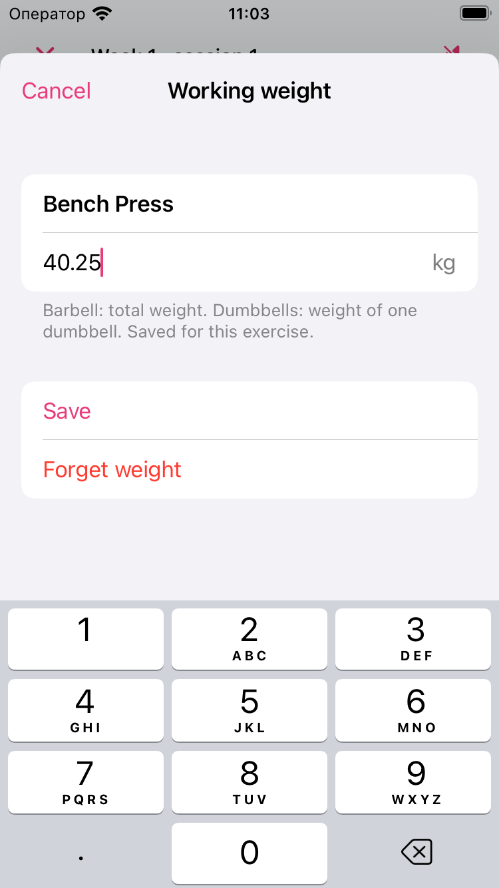
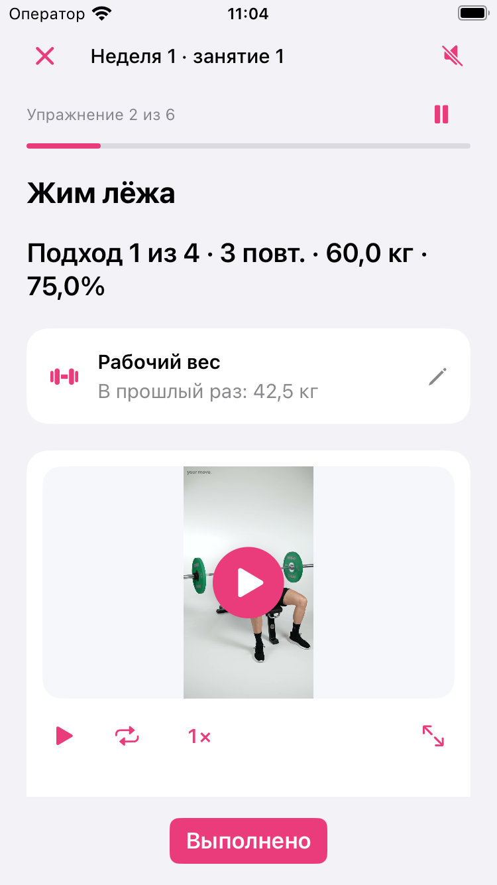

Par Nikita Revin, développeur de Tonus · 30 octobre 2026
Enregistrez une charge dans Tonus 1.5, retrouvez la dernière saisie à la séance suivante et vérifiez les unités avant de la modifier.
Dans Tonus 1.5, la carte Charge de travail permet de noter une valeur pour un exercice avec poids. À la séance suivante, elle rappelle votre dernière saisie. Cette note est enregistrée localement pour l’exercice et reste séparée des charges calculées par le programme.
Ouvrir la carte pendant l’exercice
Sur l’écran de l’exercice en cours, touchez la carte Charge de travail. Elle porte la mention Ajouter une charge si aucune valeur n’est encore enregistrée. Le formulaire qui s’ouvre affiche le nom de l’exercice : vérifiez-le avant de saisir le poids.
La carte est disponible pour 25 exercices avec poids, notamment le développé couché, le squat avec barre et le tirage horizontal avec haltère. Sa présence dépend de l’exercice affiché. Les notes de deux exercices différents sont conservées séparément.
L’ouverture du formulaire met la séance en pause. À sa fermeture, Tonus reprend une séance qui était active avant l’ouverture. Si vous aviez déjà mis la séance en pause, elle le reste.
Saisir le poids avec la bonne unité
Regardez l’unité affichée à droite du champ, kg ou lb. Pour un exercice avec barre, indiquez le poids total. Pour les haltères, saisissez le poids d’un seul haltère, comme le précise le texte sous le champ.
Vous pouvez utiliser une virgule ou un point pour les décimales. Touchez Enregistrer pour conserver la valeur. Le bouton reste indisponible si la saisie n’est pas valide. Annuler ferme le formulaire en gardant la valeur précédemment enregistrée.

Dans l’interface française, les commandes de cet écran sont Enregistrer, Annuler et, lorsqu’une valeur existe déjà, Oublier la charge. Choisissez une charge adaptée à votre situation ; le champ sert à garder une note personnelle.
Retrouver la dernière saisie
Après l’enregistrement, la carte indique Enregistré avec la valeur saisie. Quand le même exercice revient dans une nouvelle séance, elle affiche La dernière fois. Vous pouvez ainsi relire la note avant de préparer le matériel.
La carte conserve la dernière valeur enregistrée pour cet exercice. Une nouvelle saisie remplace cette valeur. Les séries, les répétitions et les charges proposées par le programme gardent leurs propres réglages.

Sur cette capture, le programme et la carte personnelle affichent des nombres différents. Le premier présente les consignes de la séance ; la carte rappelle une saisie de test. Enregistrer une note dans Charge de travail ne recalcule pas les pourcentages du programme.
Modifier ou oublier une charge
Touchez à nouveau la carte pour ouvrir la valeur enregistrée. Corrigez le nombre, vérifiez l’unité puis validez avec Enregistrer. Utilisez Annuler si vous souhaitez garder la saisie précédente.
Oublier la charge retire la note de cet exercice. La carte revient alors à Ajouter une charge. Les séances terminées restent dans l’historique et les réglages du programme sont conservés.
Pour comprendre les résultats de départ et l’arrondi utilisés par les programmes de force, consultez le guide de configuration d’un programme. La charge mémorisée décrite ici fournit un repère distinct pendant la séance.
Ce guide décrit Tonus 1.5 pour iPhone sous iOS 17 ou une version ultérieure. L’accès est gratuit, sans compte, abonnement ni achats intégrés. Les plans et les consignes écrites fonctionnent hors ligne. Les vidéos en ligne nécessitent une connexion ; les services externes peuvent afficher des publicités. La connexion à Apple Santé est facultative.